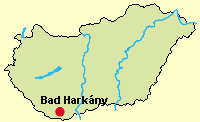
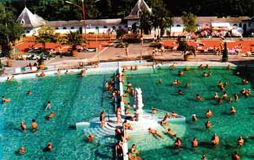
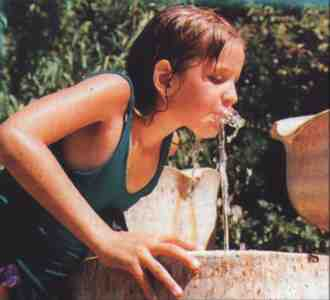
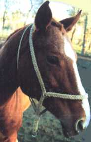

|
|
|
Lage: Bad
Harkány (amtlich: Harkány, es wird auch
Harkányfürdő gesagt)
liegt am südlichsten Teil Ungarns am Fuße des
Villányi Gebirges, im Tal der Drau (großer Grenzfluss zu Kroatien), 27 km
südlich von der Großstadt Pécs und nur 5 km nördlich von der
kroatischen Grenze. Der Besucher findet hier Berge, Seen,
Gebirgsbäche, Burgen, er kann angeln, auf die Jagd gehen oder nur
das Wild beobachten. |
 |
Wenn es um
medizinisch notwendige Kurbehandlung geht, steht für uns Bad
Harkány an erster Stelle in Ungarn, weit vor besser bekannten
Kurorten wie Bad Hévíz u.a. Ortschaften, die näher zur westlichen
Grenze Ungarns liegen. Das besonders warme und extrem stark
mineralhaltige Heilwasser ist sehr wirkungsvoll für so gut wie
alle Heilbehandlungen, die man in Kurbädern anbietet. Die
Bedeutung von Bad Harkány ist
an der Kapazität der
Übernachtungsmöglichkeiten ersichtlich: 35.000 Betten
erwarten die kur- und erholungssuchenden Gäste. Eine
wunderschöne Waldlandschaft um Harkány herum sorgt
für ideale Erholung. Bad Harkány verfügt über mehrere international
bekannte Sportzentren, die mit dem Bäderbetrieb verbunden sind.
Zahlreiche, auch ausländische Sportklubs bereiten sich hier auf
verschiedene Wettbewerbe vor.
|
Die Kultur der Gegend ist stark von den Sitten und
Gewohnheiten der Donauschwaben der Umgebung geprägt.
Bad Harkány befindet sich im sonnenreichen Weinbaugebiet
Die Spitzenweine dieser sonnenreichen Weinregion genießen Kenner
am besten direkt in den Kellern ungarndeutscher Winzer. Eine
Gaststätte, die wir in dieser Gegend herzlich empfehlen können ist
die
in der Ortschaft Villánykövesd, wo viele Weinkeller
auf
die Gäste warten. Vor allem in Boly wird viel Deutsch gesprochen,
und
da gibt es eine sehr lange Reihe von Weinkellern.
Zahlreiche kulturelle
Veranstaltungen sorgen für keine
Langeweile in Bad Harkány. Es lohnt sich, das im Kirchenhof ausgestellte
Werk des Grafikers László Morvay zu besichtigen. Dabei handelt es sich um eine, in seiner Art
einzigartige feueremaillierte Kollektion, die in dieser Gegend von
Ungarn eine populäre Volkskunst ist.
Bad Harkány bietet
niveauvolle
Hotelunterkünfte zu günstigen Preisen. Zahlreiche
Restaurants, Csárda (gastronomischer Betrieb mit
folkloristischer Musik), viele Unterhaltungsmöglichkeiten
(Festivals, Unterhaltungs- und klassische Musikkonzerte) und die
Veranstaltungsreihe Harkányi Nyár
(=Harkányer Sommer) sorgen für keine Langeweile.
|
Unser
Angebot: Kuraufenthalt in Hotels oder
Ferienapartments direkt gegenüber dem Heil-
und Strandbad. Im Hotel stehen Restaurant, Biergarten, Sonnenterrasse,
Konferenzraum, Erholungspark, ein geschlossener Parkplatz und auch eine
Garage zur Verfügung. Direkt im Hotel werden Wellness- und
Kurbehandlungen angeboten, aber auch das Strand-Therrmalbad bietet wellness und
medizinische Behandlungen an, wie:
Heilgymnastik, Heilmassage, Tangentor, Elektrotherapie, Reflexologie
und Fango-Packung. Begrifferklärungen dazu siehe
unter
|
|
Kur- und Bäderbetrieb:
Die gastfreundliche Siedlung mit schwefelhaltigem Thermalwasser
erwartet die Gäste im ganzen Jahr. Das weltberühmte
Strand- und Heilbad erstreckt sich auf 13 Hektar Gelände - das
sind rd. 35 Fußballfelder, umgeben von Wald und Parkanlagen.
Der Kurbäderbetrieb blickt bereits auf eine 200 Jahre alte
Tradition zurück. |
 |
Eigenschaften
des Thermalwassers: Das
ist an der Quelle 62°C
warm und vom hohen
Sulphidiongehalt gekennzeichnet.
Die
Zusammensetzung des
Heilwassers - Anzahl aufgelöster Ionen in einem Liter Wasser
(in mg): Natrium 160 mg, Kalium 15 mg, Ammonium 2,9 mg, Kalzium 53,4
mg, Magnesium 20 mg, Wasserionen insgesamt 251,3 mg, Chlorid 108 mg,
Bromid 0,4 mg, Jodid 0,13 mg, Fluorid 1,1 mg, Hydrogencarbonat 525 mg,
Sulfid 13 mg, Phosphate insgesamt 0,1 mg, Anionen insgesamt 641,73 mg,
Metaborsäure 7 mg, Metakieselsäure 82 mg, Freie
Kohlensäure 150 mg - Summe: 1132,03 mg. |
|
|
|
Indikationen:
Prävention und Heilung der Erkrankungen des
Bewegungsapparates, der Gelenke, alle Arten von Rheuma oder Steifheiten nach
Gelenkentzündungen, Nachbehandlung von Brüchen und anderen
Unfallerscheinungen, sowie bei chronischen Hauterkrankungen,
Verbesserung der Osteoporose, chronisch entzündliches
Frauenleiden, Störungen des Lymphkreislaufes. Einmalig gute
Resultate zeigen sich nach einem Kuraufenthalt bei Schuppenflechte
und Sehnenentzündungen in den Fingern. |
| |
|
|
Mehr Aktuelles über
das
|
| |
Direkt gegenüber dem Thermalbad befindet
sich die Zentrle des Campings, wo unterschiedliche Unterkünfte in
Hülle und Fülle angeboten werden:
|
| |
Im werden
überwiegend balneotherapeutische
Behandlungen durchgeführt. Zu den Leistungen des Krankenhauses
zählen die Behandlung von Rheuma, chronische Frauenleiden.
Besonders gut geeignet ist das Heilwasser von Harkány
für die Behandlung der Schuppenflechte (Psoriasis), die hier
bis zum Abklingen der Symptome führen kann.
Die Patienten haben die Möglichkeit, sich unter der Aufsicht eines
Rheumaspezialisten - direkt im Heilbad oder in einem der Kurhotels
- behandeln zu lassen und die breite Skala von Elektrotherapien
mit Massagen, Heilturnen, Schlammpackungen, Sprudelbäder etc. zu
kombinieren.
|
| |
|
 |
Trinkkuren:
das
ist hervorragend geeignet
für die
Behandlung von entzündlichen Magen- und Darm-beschwerden
Wellnessangebote
gibt es in Hülle und Fülle in den Kurhotels
in der Nähe des Thermalbades |
|
| |
|
Mineralwasser ist
ein in der Natur vorkommendes Wasser, in dem nachweislich in einem
Liter mehr
als 1000 mg gelöste Mineralstoffe enthalten sind d.h.
bestimmte biologisch
aktive Substanzen darin vorkommen. - Bei Trinkwasser wurde vor kurzem
dieser Wert den
Formalien der Europäischen Gemeinschaft angepasst und auf 500
mg/l reduziert. |
| |
|
Ein Kosmetiksalon rundet den
Kurbetrieb, im Heilbad
und auch in den Kurhotels, ab. Auch zuhause können
Sie die Bad Harkányer Heilkosmetika entweder in Verbindung mit den
Behandlungsmethoden oder auch getrennt anwenden. Diese
heilfördernden Kosmetika werden durch Bademittel, Shampoos,
spezielle Cremes für die Kopfhaut und gegen Herpes ergänzt. |
|
|
Reiten und Jagd in der Umgebung |
|
 |
Wer auch für sein Rücken etwas
tun will, findet zahlreiche Reitpfade in der freien Natur. Die
gesamte Umgebung ist eine Mittelgebirgslandschaft. Die
Wälder bestehen überwiegend auch Laubhölzern,
darunter viele Eiche und damit ist es ein Schwarzwildrevier, ideal für
Waidmänner.
Wir vermitteln Jagdmöglichkeiten, fragen
Sie uns doch. |
|
| |
|
Ungarn-Tourist Team

|
| |
| |
|